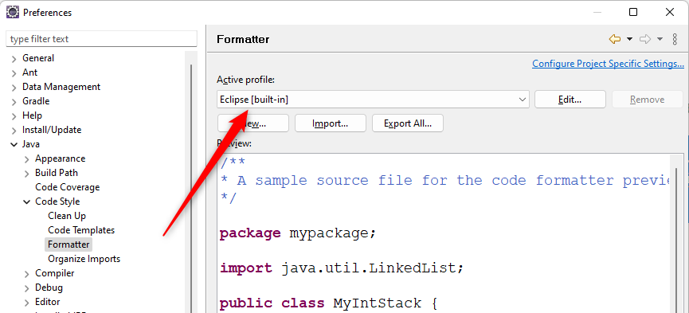

скучной теориейна то и шаг со
скучной теорией, что вы не можете отделаться от него так просто
 .
Поэтому нам придется еще пару слов сказать о
.
Поэтому нам придется еще пару слов сказать о [built-in] профилях.
Все настройки форматирования в Eclipse сохраняются в так называемых профилях (Profiles).
Profile — это набор настроек форматирования, сохраненный под уникальным именем.
Таким образом, профили, позволяют вам создать несколько разных настроек для форматирования, сохранить их под разными именами, и в дальнейшем просто переключать Eclipse на другой профиль, если вы хотите сменить правила форматирования кода.
Все профили — те, которые вам предлагает Eclipse
и те, которые вы создали сами, хранятся в выпадающем списке Active Profile:
А тот профиль, который выбран в этом списке, является активным профилем. То есть, именно его настройки используются Eclips-ом для форматирования кода в данный момент.

Если вы ничего еще не успели изменить в настройках форматирования кода,
то по умолчанию будет выбран профиль Eclipse [built-in].
Профили особенно полезны в тех случаях, когда вы одновременно ведете разработку нескольких проектов,
для каждого из которых требуются свои правила форматирования.
Тогда для того, чтобы перейти к другому набору правил, вы просто выбираете другой профиль в выпадающем списке
Active Profile.
Однако все это книжные рассуждения
.
На практике, если вы будете вести одновременно несколько проектов,
то у вас под каждый проект будет настроена отдельная инфраструктура,
со своей собственной IDE, своим Workspace, своим сервером и так далее.
Но сейчас нас это не касается, потому что мы просто хотим настроить автозамену TAB-ов на пробелы в нашем коде.
Как мы уже сказали выше, по умолчанию Eclipse использует профиль Eclipse [built-in].
В этом профиле TAB-ы печатаются, как TAB-ы, и нас это не устраивает.
Мы хотим, чтобы при нажатии на клавишу TAB Eclipse печатал нам 4 пробела.
Для этого мы должны:
Eclipse [built-in]
Начнем с открытия редактора для профиля Eclipse [built-in].
Как это сделать — вы узнаете на следующем шаге.
Но! Шаг со скучной теорией
на то и шаг со скучной теорией
,
что вы не можете отделаться от него так просто
.
Поэтому нам придется еще пару слов сказать о [built-in] профилях.
[built-in] означает, что этот профиль встроен в Eclipse, и еще то, что вы
НЕ МОЖЕТЕ ЕГО ИЗМЕНИТЬ!
Это я вас заранее пытаюсь предупредить, что после внесения изменений в настройки профиля, вы не сможете сохранить эти изменения.
Однако, Eclipse позволяет создать новый профиль на основе уже существующего, и уже для нового профиля заменить любые настройки, которые вас не устраивают. В общем, если говорить совсем коротко, то мы сейчас собираемся отредактировать встроенный профиль, а потом просто
СОХРАНИТЬ ЕГО С ИЗМЕНЕНИЯМИ ПОД ДРУГИМ ИМЕНЕМ!
Вот теперь — точно все. C этими знаниями мы можем спокойно переходить к следующему шагу,
где будем редактировать Eclipse [built-in] профиль.